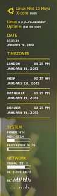

Python, ERIC RAD IDE and QT designer
Right, I have decided to play around a little with the most loved language of open source a. k. a. Python.
Right, I have decided to play around a little with the most loved language of open source a. k. a. Python.

My new friend Damjan recently mentioned that he liked the Conky on my desktop and asked for details as have few others so I figured a post on the topic will be useful.
Many who have been playing with conky seem to believe it's real easy stuff but I feel there are too many options and very little explanation which means it can be lot of messing around with different options and can take a while to get to a point where you have what you want.
To make this conky appear exactly the way it is on my screen on your desktop follow below.
Having a rooted phone and then going to one that does not have root access is like getting used to driving a luxury car but then being forced to drive a tractor. So with arrival of my shining new nexus 4 once the novelty worn of in 8 hours or so, I sat down and rooted the device. Now there are plenty of guides out there but not many specific to Linux just yet. One reason might just be the fact the Linux Users are really smart and know how to figure it out but what about users who are new ...well at least for them I am sure this post will be useful and while we are at it, I felt I will install the touch version of CWM...
Few weeks back I updated to the latest Linux Mint offering 'Maya' a.k.a Linux Mint 13. Now this is a LTS (Long Term Support) version and I wanted to be in a position to install everything right just so I can keep it for a longer duration and hence have been taking my time configuring stuff.
Last time when I had set up system for Android Development I remember messing up a lot and ending up installing too many things here and there and in the process did learn how to do it properly. I did not document that as a blog as it was too fragmented an experience at that time but this time round I did it properly and everything (well, okay, almost everything) was perfect.
I had an old Samsung Galaxy S which was still on stock ROM hence it only ever got to gingerbread and then Samsung just decided not to upgrade and I upgraded the phone so this little gadget was till yesterday destined to live with the old gingerbread. Then yesterday, I just decided to play around with it and started reading so I know what are my options. Now wiki guide on Cyanogenmod site is quite nicely written but there were one or two steps here and there which had me confused for a little while so here is my usual step-by-step guide on how to go about it.
UPDATE
Uploaded all the files to mediafire as requested in one of the comments below. These can be downloaded from this link.
I have been using Android Phones and Tablets for quite some time now and have monitored my use for apps that I use on a daily basis and those I would not even come to know if they were removed without my knowledge. So clearly there is a personal perspective on the list below:
The start of this week was like a nightmare for me. Whole family was down with flu and I had the fever that is probably the highest ever of my entire life at 40.5 C (~ 106 F).
Anyway, surviving that was easier compared to the aftermaths of this health problem that forced me to stay in bed and inadvertently deal with office mails at home on a non-IE browser with Lite version which is crap and makes you feel miserable enough to kill yourself.
So the option I had was to either boot windows on a virtual machine or find a solution within linux. Obviously, I prefer the latter and was glad to work out a solution that can help me avoid booting windows.
I have listed below the steps I followed to achieve this, though in all honesty the documentation is quite good on sourceforge site itself. It's just that some of their screenshots are dated and in French (literally, no pun intended).
Now there are several options floating around but this set-up works flawlessly for me and so I will obviously recommend this over other methods.
It's so easy to configure that there really is no reason not to give it a shot.
If you read my last post you will know I have been playing with Bodhi Linux lately. One of the selling point for this distro is it's minimalistic approach. However, that also means it doesn't come with some of the media packages that help stream all type of media - stagevu (DivX) included.
Fortunately it does not require lot of effort to get them all working. At-least for me it was quite quick.
The steps I followed are listed below:
I have an old Sony VAIO which is not in it's best of health and has long been really a companion for my telly, faithfully streaming media from bbc iplayer, youtube, dailymotion and likes. Internet enabled TV arrived in my home long long back  .
.
Now the thing with this laptop is that it's kinda gimpy - inbuilt keyboard won't work, battery is dead and it hangs on life with constant supply of energy from the AC source on the wall and the one thing that helps me load new OS on this machine - the optical reader - is temperamental and may or may not work and is moody in selecting which CD / DVD it will read and which it won't. It does in particular like CD's authored by Linux Format guys though. Writing is a skill it has forgotten long back and if it reads something, anything I am found celebrating.
UPDATE
LOOKS LIKE HOSTIZZLE IS NOT WORKING ANYMORE. THE STEPS IN THIS GUIDE WILL STILL BE RELEVANT FOR SETTING UP OPEN VPN, JUST THAT YOU WILL NEED TO FIND SOME OTHER PROVIDER.**